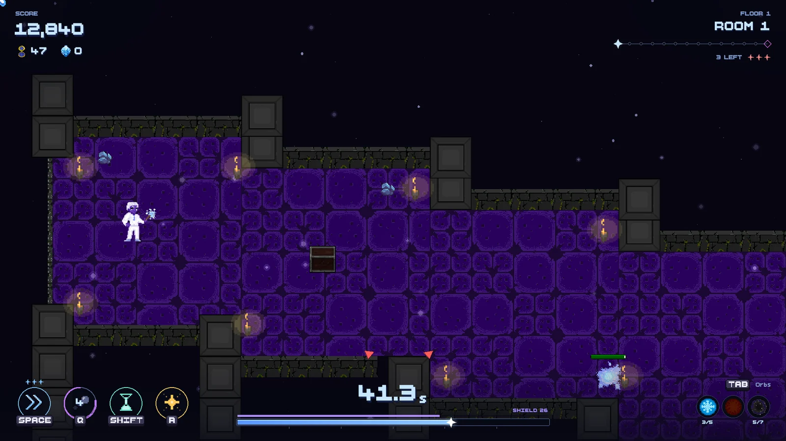
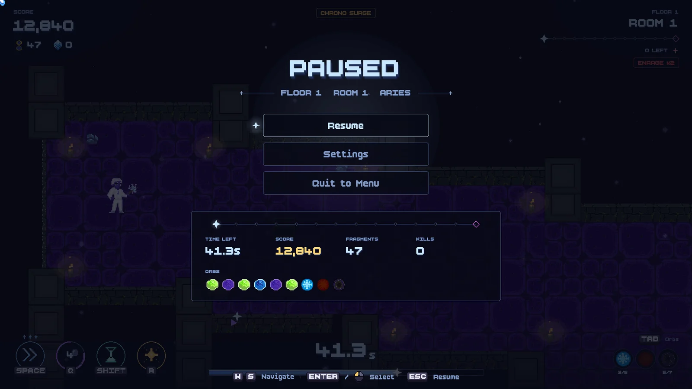
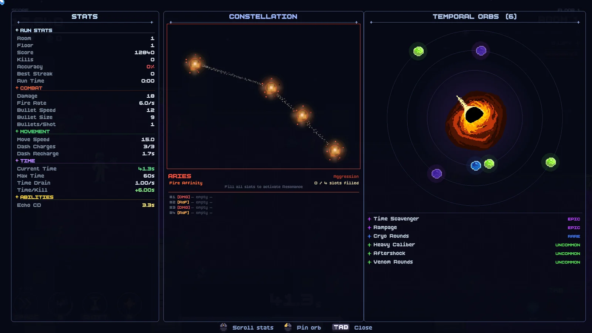
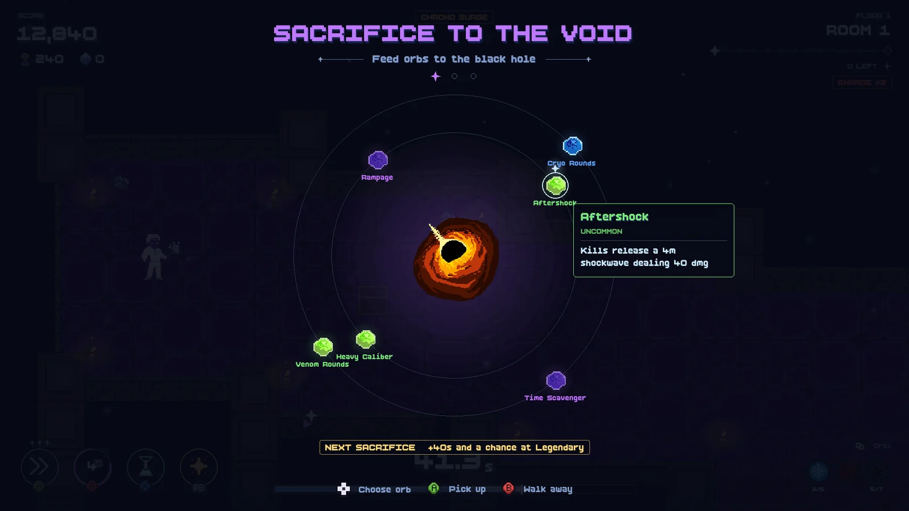
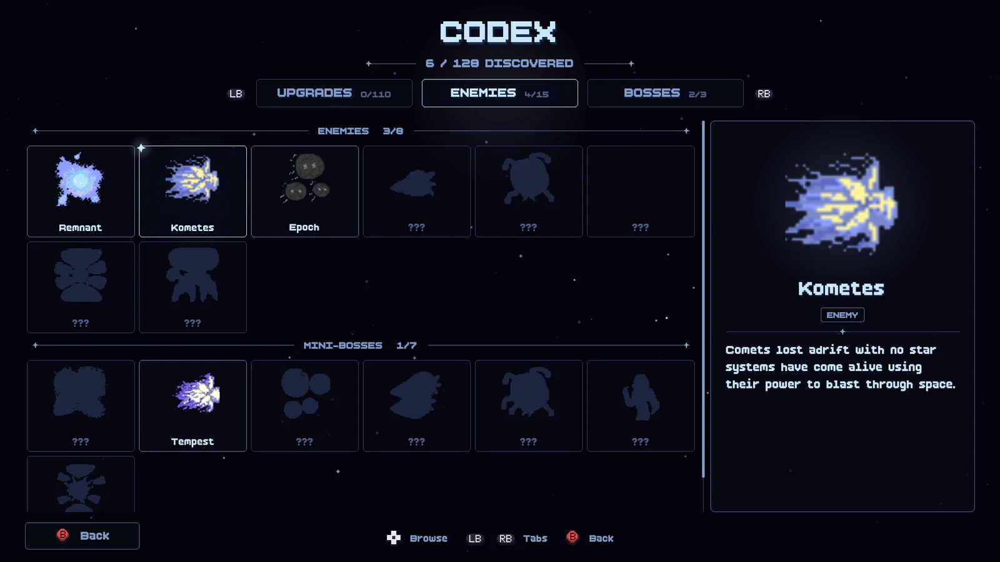
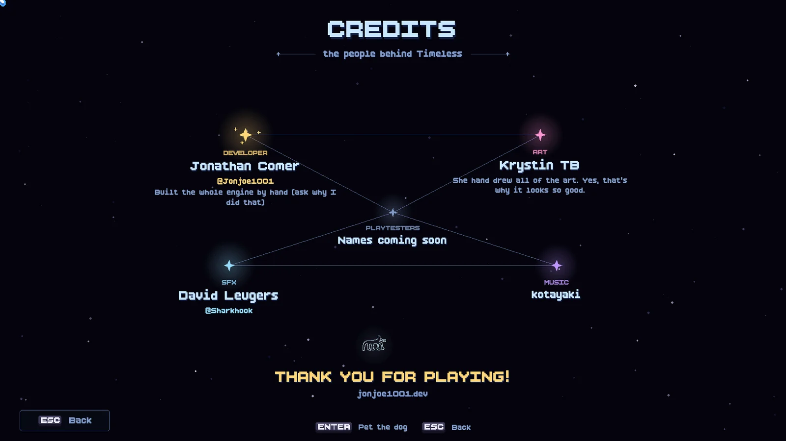

The Starlight Update is HERE!
Hey everyone! Have you ever looked at your own game and thought “wow, the menus look like a spreadsheet”? Yeah. Me too. So we fixed that!
This is the biggest update Timeless has gotten so far. Almost everything you look at, click on or hear got touched, and I’m SO excited to finally show it off.
A whole new look: Starlight
The title screen always looked amazing, but once you started a run it felt like a different game. Not anymore! Every screen now shares the same starry, glassy look as the title.

- A brand new HUD. Your time bar lives at the bottom, your abilities have their own hand-made icons, and the room track at the top shows where you are on the floor (little stars, the boss is the diamond at the end).
- New pause menu with a run summary so you can see your time, score, fragments, kills and orbs without leaving the pause screen.
- New end screens. TIME’S UP and GAME COMPLETE freeze your run behind them and show exactly where the clock stopped.
- The Time Shop is an orb ring now with a detail card for whatever you’re looking at.
- The Tab menu kept its black hole of orbs (we love that thing) and got cleaned up around it.
- Codex, Records, Settings, Controls, the Time Tree, events and the Sacrifice room all got the Starlight treatment too!


Controller support, for real this time
Want to play from the couch? You can now! Every prompt in the game shows the right button for what you’re holding (Xbox, PlayStation or Switch style) and the menus work on a gamepad now. Heat stars, the run map, the Time Tree, the Codex, the Sacrifice room, you name it. (If you find a spot where the pad gets stuck, tell me!)

A huge sound overhaul
Timeless was way too quiet in a lot of places. Now almost every action has a sound! Enemies, mini-bosses, bosses, orbs, the shop, the Time Tree, menu clicks, all of it. The music moved to OGG too, so the game is a lot smaller on your drive.
A real tutorial
New players now get a short 8-room tutorial the first time they play. It teaches moving, shooting, dashing, orbs and abilities one room at a time (and if you’ve played before, you can skip it).
The Codex and the Credits

The Codex has a big detail pane now, and the enemies you haven’t found yet show up as faint silhouettes, so you know what’s still out there waiting for you.
The Credits are a constellation of the people who made Timeless. My amazing girlfriend KTB hand drew all of the art (yes, that’s why it looks so good) and she gets her own star, of course! And our dog made it in there too. Try pressing A on him!

Fixes
- Saves are crash-safe now. A crash can’t wipe your save or your Codex anymore.
- If the game ever does crash, it writes a crash report next to your save. Please send it to me!
- Fixed a crash when scrolling the mouse wheel in a menu before your first run.
- Fixed walls, pillars and podiums showing up as plain grey boxes in the Steam version.
- Undiscovered Codex entries show as proper silhouettes now (not blue squares).
- The heat stars can actually start a run on a controller now.
- The star constellations before the first boss can be lit with a controller or keyboard.
- Lots of story and Codex typo fixes, and every boss has its proper name.
- The Bomber enemy has been removed.
What’s next?
We’re playtesting this build right now, so if you find anything weird, PLEASE tell me! Bugs, sounds that are too loud, a menu that doesn’t make sense, anything. Every report helps.
Thank you so much for following Timeless. Seriously, it means the world to us!
- Jonathan (Jonjoe1001)